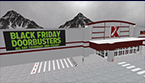
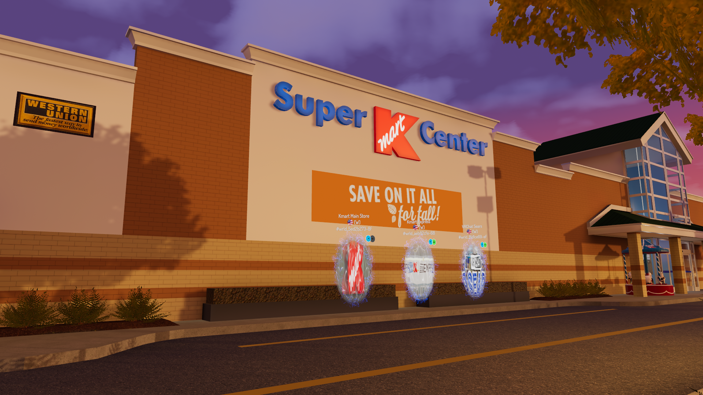
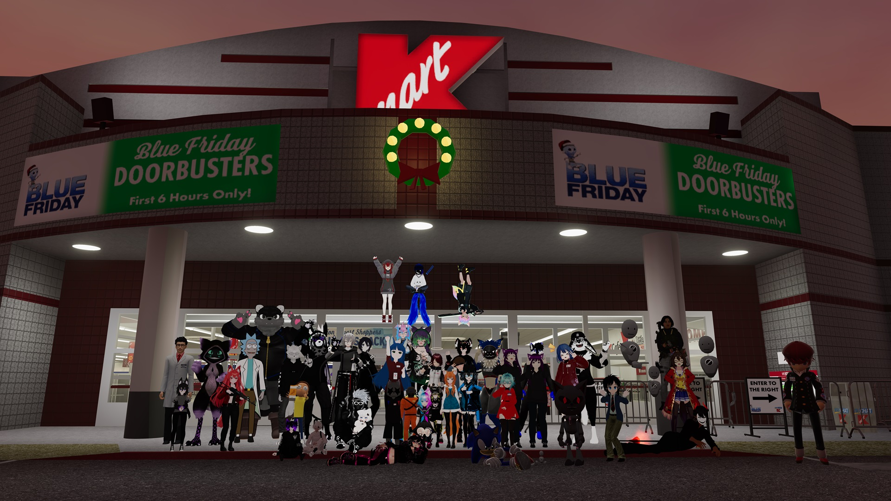

|
|
Kmart Fun Facts Kmart Financials Kmart Officers Kmart History VR Kmart Story |
|
|
|||||||||||||||||
|
|
In The Beginning VRC Kmart was founded on the principle of bringing people together in a friendly, welcoming, and nostalgic environment. VRChat is a social platform where people meet, talk, and hang out in worlds made by other players. VRChat has a very diverse selection of worlds, from mini-games, to movie theaters, to bars and restaurants.
Grand Opening The Eatery Express in the store was eventually replaced with a Kmart Café featuring Little Caesars due to popular request.
A Growing Community The VRC Kmart Discord staff were starting to take notice, and within a few weeks the server was reconfigured from a general hangout server to a Kmart-centric community. VRC Kmart started taking applications, originally requiring applicants to draw on a JPEG image application. Custom avatars with Kmart name tags were soon made, training videos for departments were uploaded, and associates started to call the store their virtual home.
First Holiday Season The flourescent lit aisles and nostalgic merchandise made people happy and in the Christmas spirit, many offering their support and kind words to the staff.

Going Super! All the features of the main store (such as Pharmacy, seasonal Garden Shop, year round Layaway, and amazing avatars) were brought over with the addition of full grocery, bakery, deli, seafood, and drive-thru pharmacy. The store is pioneering virtual retail technology never seen before, such as funtioning cash registers, inventory system with pricing, and working ATM. 
Saving Where It All Started With the timer set on the original VRC Kmart store's expiration, the Development Team got to work, starting on a new version of the original store. The new store would be rebuilt entirely from the ground up in Blender, designed with the newer SDK3 in mind. Over two years, the new VRC Kmart "Main Store" would take form, and eventually make a soft launch for PC players on Blue Friday, 2023. It features all the bells and whistles of Super Kmart Center, such as funtioning cash registers, inventory system with pricing, arcade, and more. 
To the Present VRC Kmart assembled a Development Team to work on the maps and make them better optimized with more devices, without losing the attention to detail VRC Kmart is known for. In 2023 we partnered with the Sears Archive, a subsidiary of Transform SR Brands LLC., to bring items from the Archive into the public in our immersive virtual stores. You can even find official Kmart products for sale in our VRChat locations by finding endcaps labeled "Special Buy". The community has grown to over 4,000 members, with hundreds of associates working across three store locations. Our Public Relations works with fellow VR communities and collaborates to bring fun events such as commedy nights and Kmart crossovers! We know Kmart is a special place in the hearts of generations. Even though we may seem like a "corporation" from the outside, every one of us brings to the table the love and compassion it takes to keep a small community going. Our management, our security, our associates, our developers, our shoppers, we all come to Kmart as friends, to make memories, and have fun.
|
||||||||||||||||